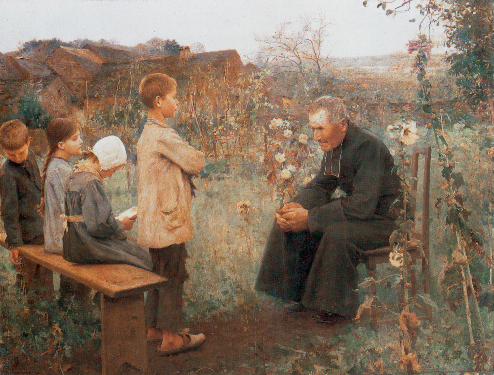

西敏小要理问答(第24-26问)

温习（22-23问）
问22：基督既为神的儿子，又是如何成为人的？
答：神的儿子耶稣基督成为人，乃是取了人真实的身体1 和有理性的灵魂（reasonable soul）2，借着圣灵的能力，在童女马利亚的腹中成胎而生3，但是没有罪4。
问23：基督作为我们的救赎主，所要执行的职分是什么？
答：基督作为我们的救赎主，在降卑与升高的境况中执行先知1、祭司2、君王3的职分。
问24：基督如何执行先知的职分？
答：基督执行先知的职分，在于用祂的道和圣灵1，将神的旨意启示给我们2，为要叫我们得救3。
1 林前二13。2 约十四26；约一18。3 约廿31；提后三16。
解释：
先知是宣扬神旨意的人。这里告诉我们，这也是基督为我们所做的，祂就是我们的先知。
基督借着祂的话来宣扬神的旨意，因为整本圣经都是祂的话；
但是单单读圣经并不足以使人有得救的智慧，所以祂又赐下圣灵，使凡听见的，都得着益处。
延伸问题：
在哪些地方基督比所有其他无论是普通的还是异乎寻常的先知和教师要卓越？（来一1-4，弗 4:11）
问25：基督如何执行祭司的职分？
答：基督执行祭司的职分，在于将自己一次献上为祭，以满足人对神公义的亏欠1，并使我们与神和好2；又持续不断地为我们代求3。
1 来九28。2 来二17。3 来七25。
解释：
祭司的职分是为百姓献祭与祷告，这也是基督为我们所做的。
当祂在地上的时候，献上自己为祭；如今在天上，为我们向父神祈求。
基督献上自己为祭的目的是：（一）为我们补罪，以满足神的公义；（二）把我们带回到神面前，作祂亲爱的儿女。
延伸问题：
在哪些方面基督胜过照着亚伦的等次的祭司？（来七11-28）
基督代求的实质是什么？（罗八34）
问26：基督如何执行君王的职分？
答：基督执行君王的职分，在于使我们降服、归向祂1，治理、保护我们2；并且克制、征服祂和我们的仇敌3。
1 诗一一○3。2 赛卅三22。3 林前十五25。
略解：
君王是国度的统治者。现今，一个伟大的国度已建立在世上，由神的所有儿女组成，而其统治者就是基督。
祂的职分：（一）使我们甘愿服从祂；（二）颁赐律法来引导与保护我们；（三）祂制伏一切反对我们与祂的人。
延伸问题：
他是在什么时候被命定或指定为王的？(Colossians 1:16)
基督的国度分成哪几个方面？